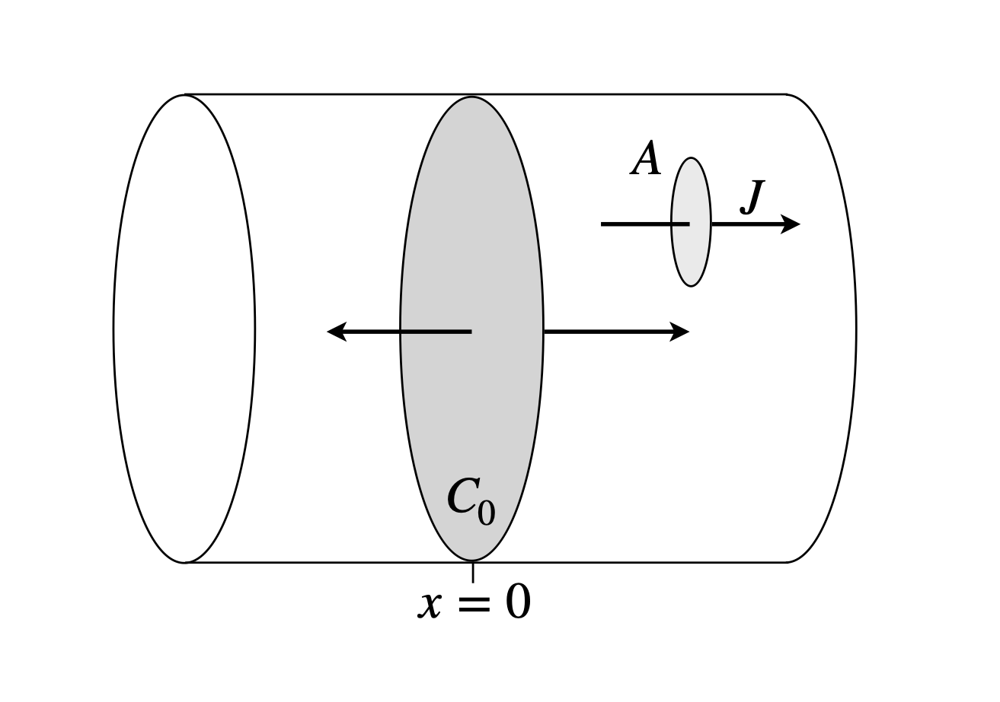

Questions 93-114
Contents
Questions 93-114#
Q93 partial derivative#
Find \(\partial z/\partial x, \;\partial z/\partial y\) and \(\partial^2 z/\partial x\partial y\) if \(z(x, y) = (x^2 + y^2)\sin(y/x)\).
Q94 Wave equation#
(a) If \(z = \exp(x + cy) + \ln(x - cy)\), \(c\) being a constant, show that \(z\) is a solution of the wave equation
(b) If the function \(z\) is a general one made of a linear combination of two arbitrary functions, \(z = f (x + cy) + \phi(x - cy)\) where \(f\) and \(\phi\) are those two functions. Is the wave equation in (a) also true?
Q95 Flux and diffusion#
A flux \(J\) is defined as the amount of substance passing through an area \(A\) of a solution in time \(t\), and is \(J = dn/dt\), which means that \(dn\) molecules pass through the area in time \(dt\). In a solution of constant temperature, if you do not stir it, this flux is due only to the diffusion of the molecules. If there is no concentration gradient, then clearly the solution has a uniform concentration and the flux from bottom to top through a victim area \(A\) is the same as top to bottom, making zero in total. If you make a concentration gradient, for example by heaping two teaspoons of sugar in the bottom of a cup of coffee, then the flux of the sugar one way through our victim area \(A\) is greater than the reverse; diffusion acts to equalize the concentration and thus the concentration depends on time \(t\) and position in the solution \(x\).
In one dimension, the flux is related to Fick’s first law of diffusion as
where \(D\) is the diffusion coefficient and \(c\) the concentration at position \(x\), and the flux \(J\) is therefore now defined in units of \(\mathrm{mol\,dm^{-2}\,s^{-1}}\). Clearly, the flux is greatest when the concentration gradient is greatest. Partial derivative notation \(\partial\) is used because the concentration depends on position and time.
(a) Diffusion in one dimension may be supposed to be that down a thin, smooth-walled capillary whose length \(x\) is far greater than its diameter. In this case the rate of change of concentration is \(\displaystyle \frac{\partial c}{\partial t}=-\frac{\partial J}{\partial x}\). Differentiate \(J\) and so find Fick’s second law.
(b) Fick’s second law can be solved by realizing that the flux \(J\) must be zero at the closed ends of our capillary tube; this is the boundary condition, and the resulting concentration is given by
where \(c_0\) is the total concentration of solution. Show that this equation for the concentration is a solution of Fick’s second law.
(c) When does the equation for concentration given above not apply?
(d) Assume that an amount \(c_0\) is placed in a thin disc at \(x\) = 0 in the centre of an infinitely long capillary; Fig. 36. Plot the concentration as a function of distance \(-x \to x\) and at different times when \(D = 2.5 \cdot 10^{-9}\,\mathrm{ m^2 s^{-1}}\), which is approximately that of water, and assume that \(c_0 = 1\,\mathrm{ mol\, dm^{-3}}\). Choose suitable times, e.g. microseconds. Distances are estimated using the fact that the distance diffused in one dimension in time \(t\) is \(x = \sqrt{2Dt}\).

Figure 36. Part of an infinitely long cylinder with initial concentration \(c_0\) at its centre, \(x = 0\), and zero elsewhere and shows the flux through a small victim area \(A\).
Q96 van-der-Waal’s eqn.#
The van der Waals equation is \(\displaystyle \left(p + \frac{a}{V^2}\right)(V - b) = RT\), where \(a\) and \(b\) are constants.
(a) Calculate \(\displaystyle (\partial V/\partial T)_p\)
(b) At the critical point \(\displaystyle \left(\frac{\partial p}{\partial V} \right)_T=\left(\frac{\partial^2 p}{\partial V^2} \right)_T=0\). Show that the critical parameters are \( \displaystyle T_c=\frac{8a}{27bR},\;V_c=3b, \;p_c=\frac{a}{27b^2}\).
Q97 Enthalpy#
In the equation \(H = U + pV\), \(H\) is the enthalpy, \(U\) the internal energy, \(p\) pressure, and \(V\) volume. As each parameter depends upon temperature, i.e. \(U \equiv U(p, T)\) and so forth, show that \(\displaystyle \left( \frac{\partial U}{\partial T} \right)_p =C_p-p\left( \frac{\partial V}{\partial T} \right)_p\), where \(C_p\) is the heat capacity at constant pressure; \(\displaystyle C_p =\left( \frac{\partial H}{\partial T} \right)_p \).
Q98 Sakur-tetrode eqn.#
The Sackur - Tetrode equation for the translational entropy S of a perfect gas is
where \(C_p\) is the heat capacity at constant pressure \(p\), \(S_0\) is a constant, \(n\) is the number of moles of the gas, and \(R\) the gas constant.
Calculate the change of entropy with temperature at constant pressure and at constant volume, \(\displaystyle \left(\frac{\partial S}{\partial T} \right)_p\) and \(\displaystyle \left(\frac{\partial S}{\partial T} \right)_V\). (Hint: use the gas law to obtain volume from pressure.)
Q99 Internal energy#
If \(U\) is the internal energy of a gas, use the relationship
to evaluate \(\displaystyle \left( \frac{\partial U}{\partial V}\right)_T\).
(a) for an ideal gas
(b) for a van der Waals gas. Comment on the results obtained.
Q100 Compressibility#
The compressibility of a substance is the rate of change of volume with pressure normalized to the volume and is defined as \(\displaystyle \kappa = - 1\frac{1}{V}\frac{\partial V}{\partial p}\). Its inverse is called the bulk modulus. The negative sign is included to make \(\kappa\) positive because the slope of the \(P-V\) plot is negative.
Calculate the isothermal compressibility for
(a) an ideal gas,
(b)a van-der-Waal’s gas
Figure 37. Pressure vs volume at constant temperature for an ideal gas.
Q101 1D diffusion#
The equation
describes the one-dimensional diffusion of molecules or colloids in the presence of a steady force moving the particles at velocity \(v\). \(D\) is the diffusion coefficient, \(c\) concentration, \(x\) position, and \(t\) time.
(a) What are the units of the diffusion coefficient \(D\)?
(b) Show that \(c = c_0\exp(v(x-x_0)/2D)\exp(-v^2t/4D)\) is a solution to this equation if \(c_0\) and \(x_0\) are constants. What do these constants represent?
Q102 Heat Capacity#
(a) Starting with the first law, show that the heat capacities for 1 mole of an ideal gas at constant pressure and volume are related by \(C_P = C_V + R\).
(b) The enthalpy is defined as \(H=U+pV\). Show that \(\displaystyle C_p = \left( \frac{\partial H}{\partial T} \right)_p\).
Notes: Assume that the internal energy \(U\) is only a function of the temperature. The heat capacity of a substance is defined as the heat absorbed per unit change in temperature, \(C = dQ/dT\).
Strategy: The first law relates heat change \(dQ\) to change in the internal energy, \(dU\), and the work, \(-PdV\). Make \(U\) a function of temperature; \(\displaystyle dU = \left(\frac{dU}{ dT}\right)dT\) means that the heat capacity has to be found in terms of \(dU/dT\).
Q103 Internal energy#
Combining the first and second laws produces \(dU = TdS - pdV\), where \(S\) is the entropy and is a function of \(T\) and \(V\), i.e. \(S = S(T, V)\).
(a) Calculate \(\displaystyle \left( \frac{\partial S}{\partial T}\right)_V\) and \(\displaystyle \left( \frac{\partial S}{\partial V}\right)_T\) by assuming that the internal energy also is a function of \(T\) and \(V\), i.e \(U=U(T,V)\).
(b) Next,using \(H=U+pV\) state \(dH\) as a total derivative and so find \(\displaystyle \left( \frac{\partial S }{\partial T}\right)_p\) where \(H=H(U,p,V)\) and \(S=S(p,T)\).
Q104 Internal energy of a van-der-Waal’s gas#
Using equation (50) find the expression for the internal energy of a van der Waals gas.
Q105 Partial derivative#
In classical thermodynamics, equations sometimes seem to appear out of nowhere. This is such a case; find \((\partial V/\partial T)_E\) if \(V = f(p, V, E)\) with \(E\) constant.
Q106 Mixed derivative#
If \(p(V - B_T) = RT\) find \((\partial V/\partial p)_T,\; (\partial V/\partial T)_p\), and the mixed derivatives if \(B_T\) is a function only of \(T\).
Q107 van-der-Waal’s equation of state#
One of the Maxwell relationships,
can be used to calculate an entropy change. The difference \(\Delta S_1\to p\) between the entropy of a real gas at pressure \(p\) and the entropy it would have at 1 bar if it were an ideal gas can be obtained by calculating the entropy change of the real gas from \(0 \to p\) and subtracting from this number the entropy change of an ideal gas from \(0 \to 1\) bar. This subtraction has to be done, because the entropy of a gas is infinite at zero pressure. In each case, integrate the Maxwell equation and calculate the entropy change \(\Delta S_{1\to p}\) from \(1 \to p\) bar if the real gas follows
(a) the van der Waals equation of state \((p + a/V^2)(V - b) = RT\) where \(a\) and \(b\) are constants depending on the type of gas.
(b) the Berthelot equation of state
where \(T_c\) and \(p_c\) are constants. (This question is based on one in Barrow 1979, Chapter 8.)
Q108 Enthalpy#
Enthalpy is defined as \(H = U + pV\).
Total differentiation produces \(dH = dU + pdV + Vdp\) and since \(dU = TdS - pdV\) then
(a) Using \(\displaystyle \left(\frac{\partial S}{\partial p} \right)_T= -\left(\frac{\partial V}{\partial T} \right)_p\), and the previous equation for \(dH\), find an equation for \((\partial H/\partial p)_T\) that does not involve the entropy.
(b) Differentiate the equation you produce with respect to \(T\) at constant pressure to obtain an equation for \((\partial C_p /\partial p)_T\) where \(C_p\), the heat capacity at constant pressure, is \(C_p = dH/dT \equiv (\partial H/\partial T)_p\) . Formally integrate the result to obtain an equation showing how \(C_p\) changes with pressure from 0 to a new pressure \(p_1\). Calculate the change for a van-der-Waal’s and Berthelot gas. (See previous question.)
Q109 Gas expansion#
A gas changes in volume during heating; the heat absorbed \(q\) differs from the increase in internal energy \(U\) by the amount of work done by the gas, \(pdV\), hence \(q = U + pdV\). The heat capacity at constant pressure \(C_p\) is the rate of change of enthalpy with temperature and that at constant volume, \(C_V\), is the rate of change of internal energy with temperature. The enthalpy is \(H = U + pV\) and the internal energy is a function of \(p,\; V\), and \(T\), i.e. \(U = f(p, V, T)\).
(a) Write down derivative expressions for \(C_V\) and \(C_p\) and show that \(\displaystyle C_p=\left(\frac{\partial U}{\partial T} \right)_p+p\left(\frac{\partial V}{\partial T} \right)_p\)
(b) Starting with the last equation show that \(\displaystyle C_p=C_V+\left(p+\left(\frac{\partial U}{\partial V} \right)_T\right)\left(\frac{\partial V}{\partial T} \right)_p\).
Q110 Entropy#
If entropy is a function of volume and pressure \(S = f (T, V)\), write down an equation for \(dS\) and then by using one of Maxwell’s equations \(\displaystyle \left(\frac{\partial S}{\partial V} \right)_T=\left(\frac{\partial p}{\partial T} \right)_V\) show that
Q111 Internal energy#
(a) Calculate the change in internal energy of a van der Waals gas when the volume increases from \(V_1\) to \(V_2\) at a constant temperature.
(b) Calculate this energy for 1 mole of CO\(_2\) expanding from \(10 \to 20 \,\mathrm{dm^3}\).
Strategy: It is not obvious where to start but the internal energy \(U\) is given either by \(H = U + pV\) or \(A = U - TS\). Differentiation with respect to \(V\) at constant \(T\) is required, so the second equation describing the Helmholtz free energy \(A\) should be tried. Recall that \(A\), \(U\), and \(S\) are each functions of \(V\) and \(T\). The equation \(dA = -SdT - pdV\) is also needed. The van der Waals equation is \((p + n^2a/V^2)(V - nb) = nRT\), where \(n\) is the number of moles and \(a\) and \(b\) are constants, and for the calculation in (b) the value of each constant should be looked up in a textbook such as McQuarrie & Simon (1997).
Q112 Internal energy#
An alternative starting point to find the internal energy of a non-ideal (monatomic) gas is to combine the first and second laws as \(dU = TdS - pdV\), and then to use
to find the internal energy due to expansion of the gas at constant temperature.
(a) Find \((\partial U/\partial V)_T \) as in equation (50) and
(b) the total energy of the van-der-Waal’s gas, which is its internal plus kinetic energy.
Strategy: The internal energy of an ideal gas is zero but it still has kinetic energy. An ideal monatomic gas has energy \(3nk_BT/2\), where \(k_B\) is Boltzmann’s constant. A term \(nk_BT/2\) is added for each degree of freedom in the molecule, one for its kinetic energy in three dimensions, or equivalently each squared term in the energy, potential and kinetic. Therefore a diatomic gas has an extra \(nk_BT2/s\) each for potential and kinetic energy because the bond stretching energy varies in proportion to the square of the extension. In (a) the Maxwell equation \(\displaystyle \left(\frac{\partial S}{\partial V} \right)_T=\left(\frac{\partial p}{\partial T} \right)_V\) is required. See Chapter 4 if you are unfamiliar with integration.
Q113 Rate constant#
Calculate \(\left(\partial k/\partial T\right)_p\) if the rate constant \(\displaystyle k = e^{-\Delta G/RT}\) and if the pre-exponential ‘constant’\(A\) depends on temperature. Use \(\displaystyle \left(\frac{\partial H}{\partial T} \right)_p=T\left(\frac{\partial S}{\partial T} \right)_p\) to simplify the result.
Strategy: Rewrite using \(\Delta G = \Delta H - T\Delta S\) then take the log of the rate constant and differentiate with \(T\) keeping \(p\) constant.
Q114 Quantum particle on a ring#
In solving the quantum mechanical problem of particle on a ring or the two-dimensional rigid rotor (see Chapter 10.5.9), and in the solution of differential equations such as two-dimensional diffusion or vibrations of a membrane, the conversion of derivatives from Cartesian to plane polar or cylindrical coordinates is necessary. The equations require the derivatives \(\partial z/\partial x\) and \(\partial^2 z/\partial x^2\) to be found in terms of \(r\) and \(\theta\) using the conversion from rectilinear to cylindrical coordinates; \(x=r\cos(\theta),\;y=r\sin(\theta),\;z=z\) and \(r^2 =x^2 +y^2\).
(a) Calculate these derivatives and
(b) show that \(\displaystyle \frac{\partial ^2 z}{\partial x^2}+\frac{\partial^2 z }{\partial y^2}=\frac{\partial^2 z }{\partial r^2 }+\frac{1}{r }\frac{\partial z}{\partial r}+\frac{1}{r^2 }\frac{\partial^2 z}{\partial \theta^2}\).
The first derivative calculation is very easy, the second very tough!
Strategy: (a) Use the chain rule to find \(\partial z/\partial x\) by expanding this as a total derivative in terms of \(r\) and \(\theta\). Then differentiate again. To find derivatives such as \(\partial r/\partial x\) the equations must be rearranged so that there are none with mixed coordinates on the same side of the equation, thus to find \(\partial r/\partial x\) start with \(r = \sqrt{x^2 + y^2}\), differentiate and then simplify. In the second derivative calculation, you will need to recall that that \(r\) and \(\theta\) are only functions of \(x\) and \(y\).